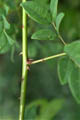

Common name : Fever nut
Common name in Tamil : Kalichikai
Common name in Telugu : Gachakaya
Common name in Singhalese : Kumburu wel


Diagnostic characters
Botany & morphology
Ecology
Distribution
Mangrove associate. Large climber with numerous recurved prickles. Leaves bipinnate. Flowers yellow. Fruit ellipsoid, beaked with one seed.
Leaves compound, alternate, bipinnate, to 30 cm long, with 2 to 6 pairs of pinnae; leaflets 4 to 6, opposite, ovate, apex acute, margin entire. Rachis and stem armed with recurved prickles.
Inflorescences panicles racemes.
Flowers yellow, zygomorphic, bisexual; stamens 10, with woolly filaments.
Fruit ellipsoid, flat, beaked; seed solitary, ovoid and black.
Occur in back mangrove towards landward side. Common along river estuary.
India and Sri Lanka through most of Southeast Asia to the Ryukyu Islands, Queensland, and New Caledonia.
Top of the page